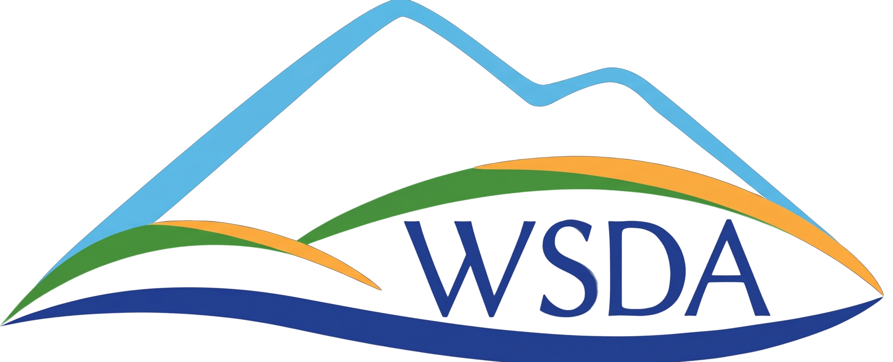
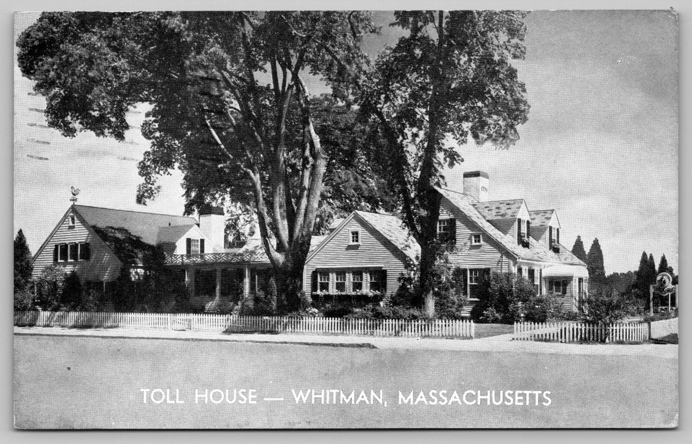
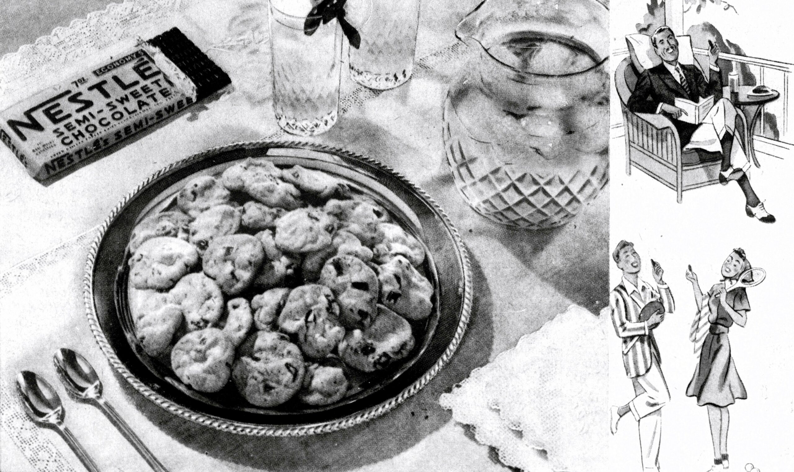
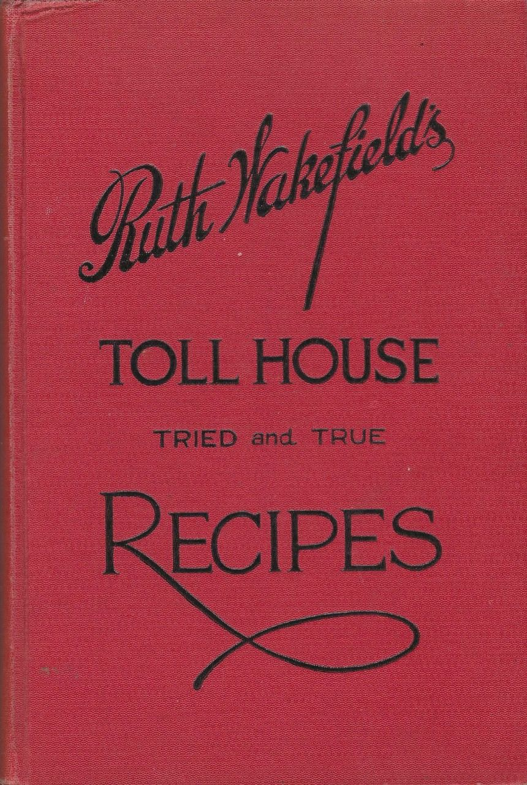
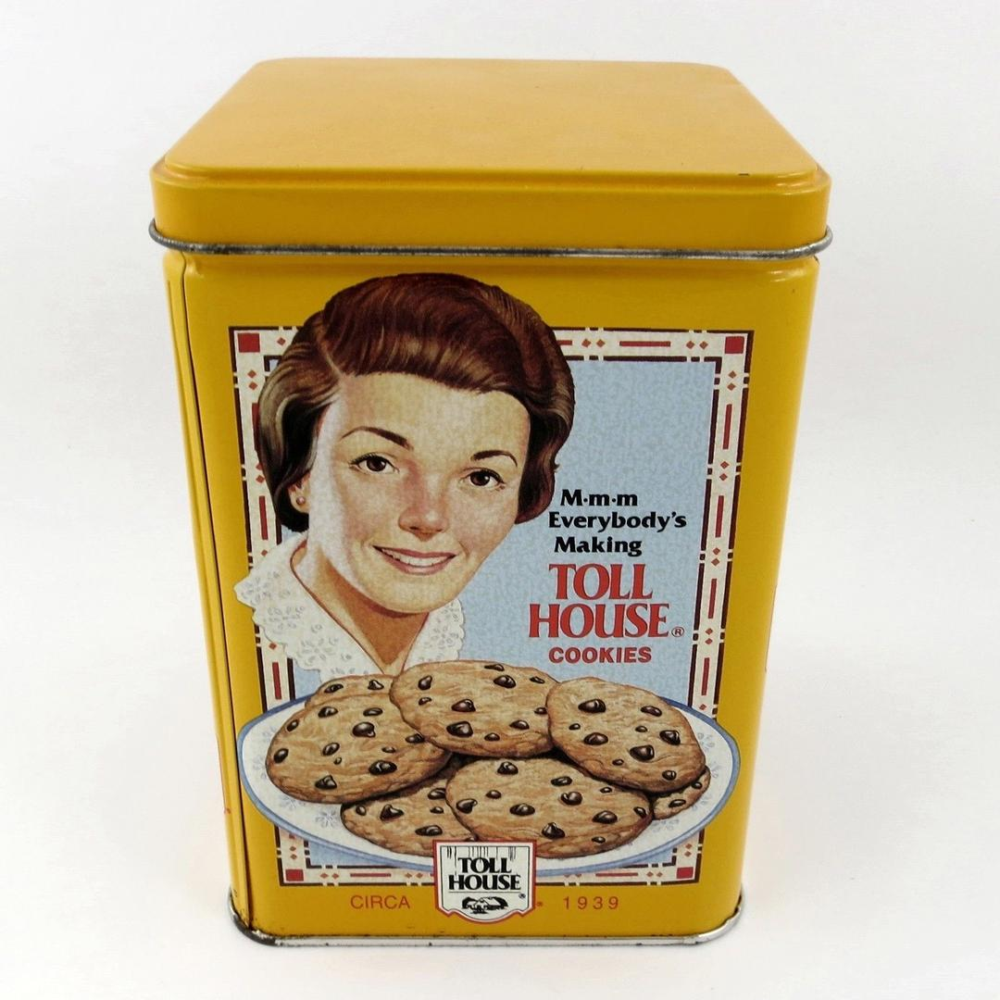
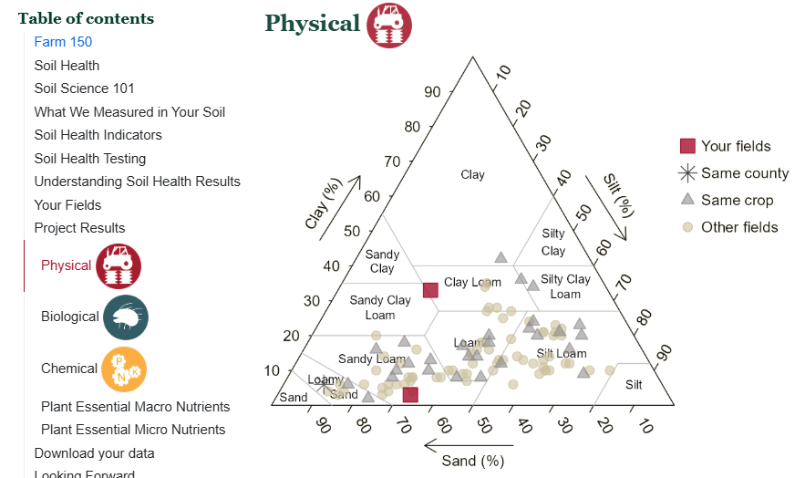
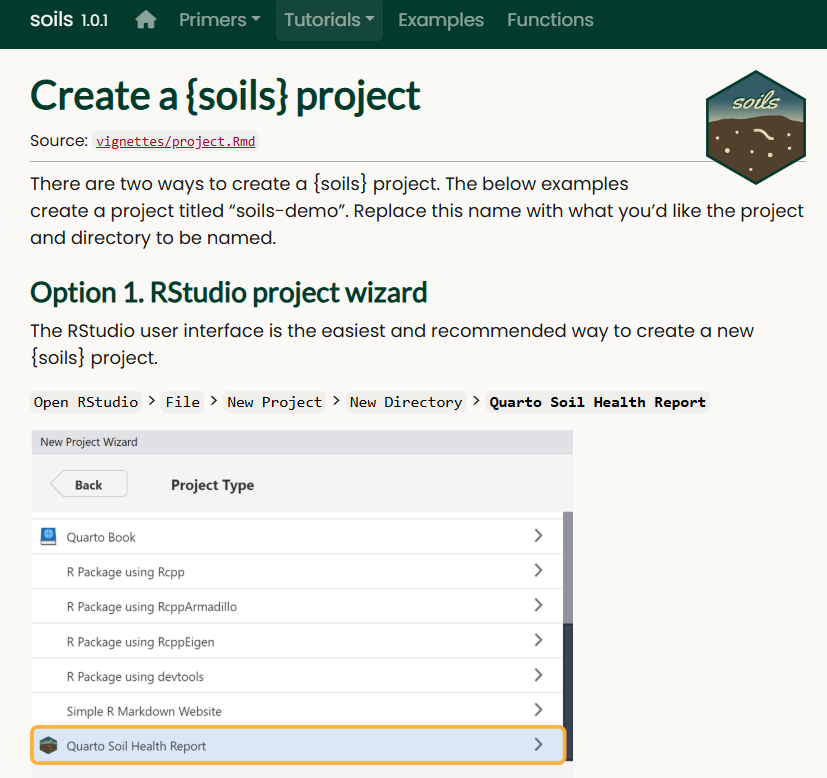

Meeting Users Where They’re At




Anyone who can bake.

Anyone at all.
Each layer trades flexibility for expanded access.
Build the right layer for the right user.
One report for every farmer in the survey.

farmers with their own report
Interactive HTML
for increased engagement.
Printable PDF
for the folks who wanted paper.
“I was able to see a direct connection between my soil management decisions and the health of the soil I manage.
One Quarto project. One laptop. One person.
The template solved the reports problem. It did not solve the people problem.
{soils}: An R package for anyone running a soil sampling project.
roxygen2 & pkgdown
Documentation
Learn how to use the functions and package.
.qmd
Modular Quarto files
Customize report content.
.R
Functions & Scripts
Validate, process, and visualize data; render reports.
Everything you need to adapt the workflow to your own data.
How technical assistance providers unlock access to the reports.

Anyone comfortable in R can run their own soil survey reports. Not everyone is.
What’s underneath.
Dirt Data ReportsShinyUpload, choose, download. No R.
{soils}R packageValidation, calculations, templates, styling.
Quarto templateThe report itself.
Extension staff & technical assistance providers who don't code
No R install. No command line. Zero friction.
Upload → pick parameters → render → download.
Drop the recording in as images/dirt-data-reports.mp4 (or .webm) and this tag goes away. ≤ 2:00, cut to upload → parameters → render → download.
Real users showed us what worked, and what didn’t.
+ Positive signal
People used the app for their own projects.
− Negative signal
Different projects surfaced new needs.
The app worked. It also showed us where the package was thin.
Expectation vs. reality, and the feedback loop between them.
Three layers. We assumed they'd line up.
Expectation. A neat, linear build: template, then package, then app.
Reality. Real-world use exposed workarounds in the app, signaling what the lower layers needed.
Refactoring for independence. The hacks move down into {soils}; every tier stands on its own.
Meeting users where they’re at.
| Layer | Who | What it’s for | What it takes |
|---|---|---|---|
| Template | You | Your analysis, your way |
Edit and render |
| Package | Anyone who codes | The same analysis, on their data |
Install, call a function |
| App | Everyone | The output, no code at all |
Upload, download |
Meeting Users Where They’re At
The right tool is the one that gets the insight into the right hands.
With Molly McIlquham, Teal Potter, Deirdre Griffin LaHue, Leslie Michel, Kwabena Sarpong & Dani Gelardi